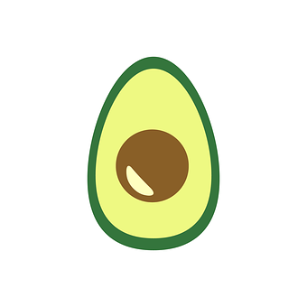

su per food
noun: superfood; plural noun: superfoods;
A nutrient-rich food considered to be especially beneficial for health and well-being.
- 
- More Info

su per food
noun: superfood; plural noun: superfoods;
A nutrient-rich food considered to be especially beneficial for health and well-being.